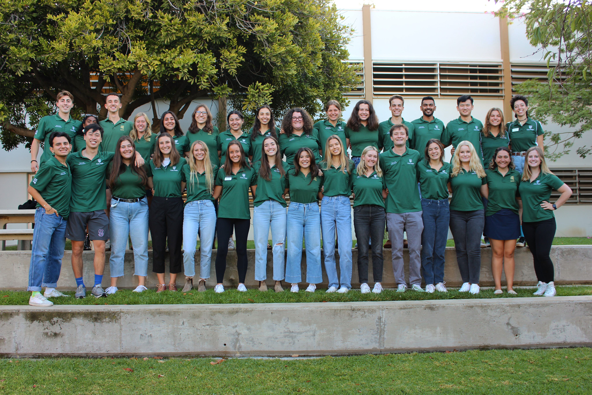

Poly Reps is a voluntary, public relations organization of around 55 students who assist in the promotion of Cal Poly to prospective students and their supporters, alumni, potential donors, and friends of the university. Poly Reps exemplify Learn by Doing through campus tours, visits to high schools, assisting in special events, and developing leadership and friendship amongst one another. Sponsored by the Admissions Office, Poly Reps represent Cal Poly to students past, present, and future. Poly Reps bring together students from different majors and backgrounds with one common thread- they love to promote and support Cal Poly. Poly Reps’ goal is to get prospective students to want to come to Cal Poly, but they are ultimately happy that people are pursuing higher education, wherever they commit.
